町の真ん中の民家で、描く姿を「視せる」最初の一日
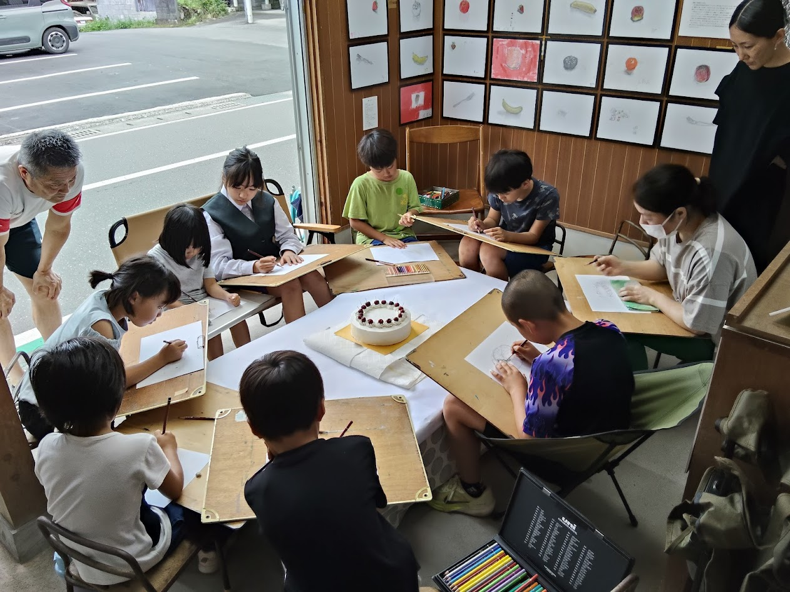
「視える 旧小鳩美術部」、記念すべき第1回。会場は、スーパー彦市十和店の東隣にある 国道沿いの民家。これまで旧小鳩保育所で活動してきた美術部が、 月に一度、まちの真ん中にアトリエをひらく——その始まりの日です。
引き戸を開け放った土間に大きな机を置き、子どもたちがぐるりと囲んで描く。 その様子が、そのまま道ゆく人から「視える」。作品を展示し、 描いている姿そのものも、まちに開いていく。という今年度の挑戦の一歩目でした。
📸 当日の様子
※ 写真はクリック（タップ）で拡大。長いキャプションも、拡大すると全文が読めます。
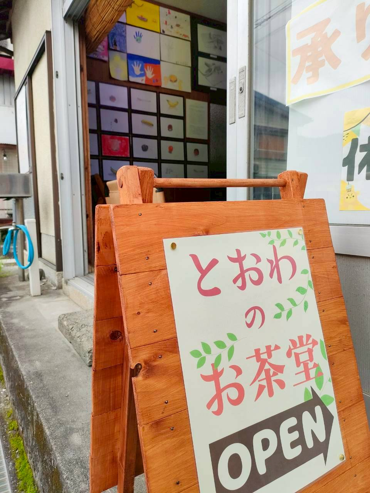
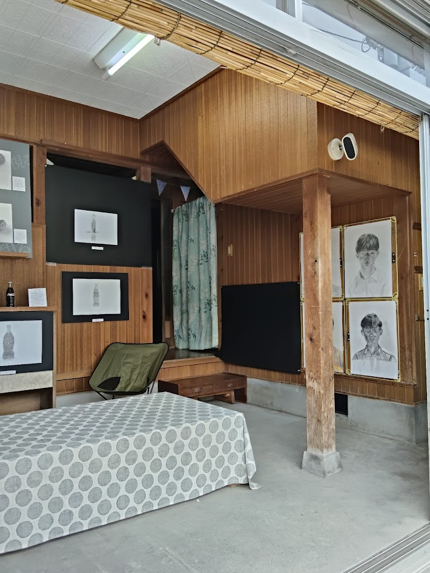
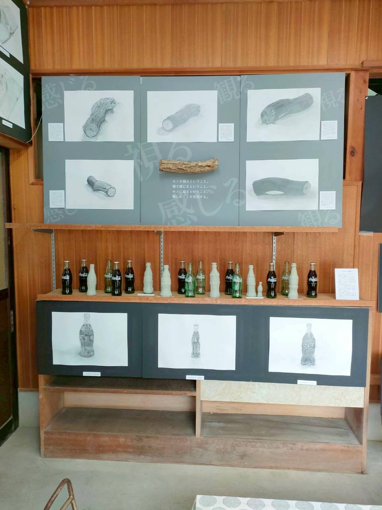
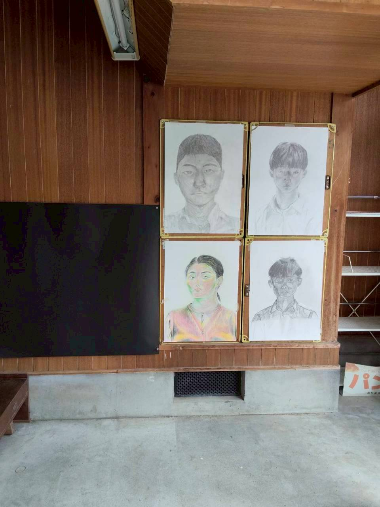
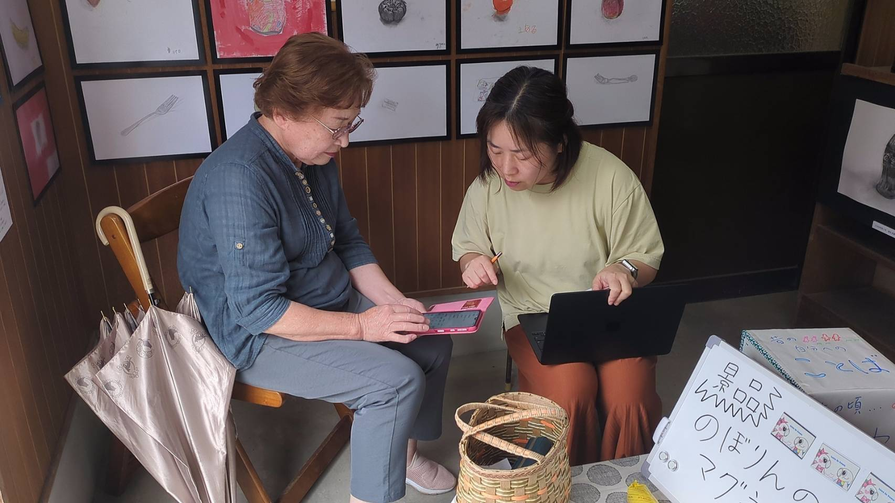
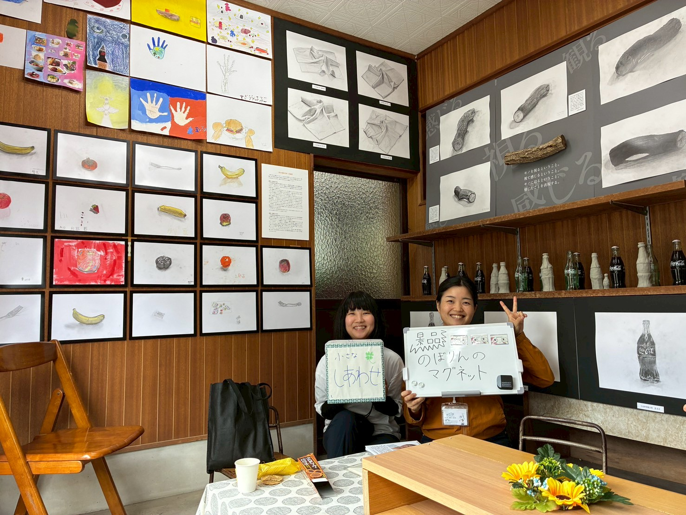
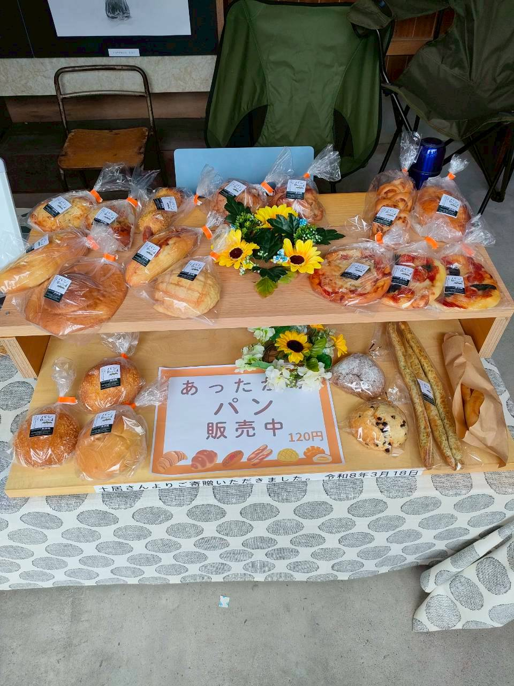
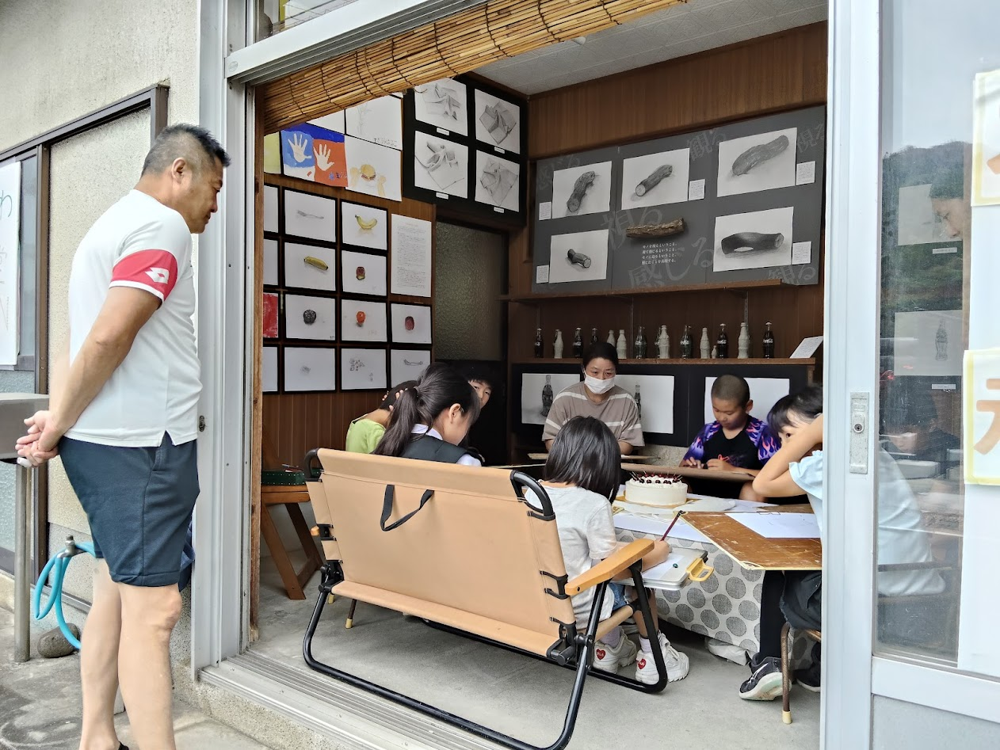
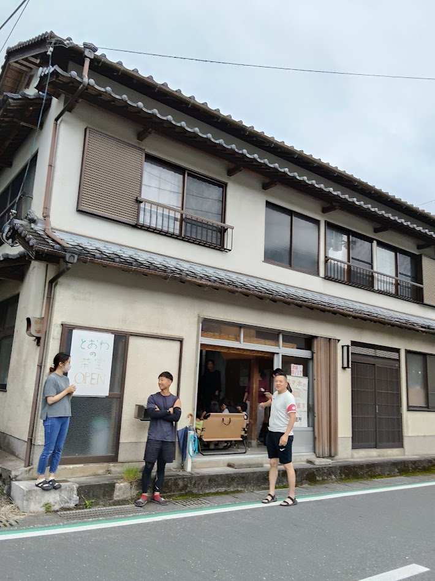
✍️ この日のながれ
スーパー彦市十和店の横にあるM邸を、10:00〜18:00の1日お借りして開催。 このうち10:00〜16:00は、同じ会場でひらかれる「お茶堂」との 同時開催としました。お茶堂にすでに来られている方が美術部を見てくれるのでは、 という私たちの期待と、美術部の企画が気になって立ち寄る方がおられるのでは、という お茶堂側の期待。その両方を重ね、コラボレーションするカタチにしました。
15時すぎ、メンバーが集まり始め、創作開始です。 記念すべき1回目ということで、モチーフは「ケーキ」。 今回から初めて参加された大人の方は、「集中して描く時間がとても心地よく、楽しかった」 とのこと。子どもたちも、いつもの声かけどおり——しっかり視て描くことができていました。
💭 手応え：柔らかく広がっていく周知
準備の段階から、うれしい出会いがありました。道すがら、関心高く見てくださる 高齢の女性が現れて——小学生や中学生が描いた作品だと知ると、 大変驚き、喜んでくださったのです。旧小鳩美術部の存在もまったく ご存じなかった様子で、開催前から周知が柔らかく進んでいる手応えがありました。
お茶堂の時間帯には、「絵を見にきた」という人もいれば、「スーパーのついでに寄った」という人も。 スーパーの方からは、「今後ポスターを作ってくれれば貼るよ」という 応援の言葉までいただきました。
🧭 いちばんの発見
今回の発見：(講師より)
- 一つのモチーフを皆で囲んで描いたのが今回初めてでした。
- 狭いがゆえにそういう形になりましたが、結果とても良かったと思ってます。
- 今まではテーブルの上に各々置いて描いていたので、描いている途中にいじって描き始めと向きが変わったりしていたのですが（触感を確かめられるのはとても良いけど）、今回それが出来ないので、ひたすら見るしかなくて良かったかなと。形も影も変化しないから捉えやすかったのでは。
- モチーフも良かったのはありますけど、モチーフとの距離がいつもより遠かったので全体の形が見えやすくて、大きい形をとらえるのが皆早かったです。
- 月一回の「視える旧美術部」では一つのモチーフを囲んで描くのが定着したら「視る」レパートリーが増えて良いなと個人的に思ってます。
⚠️ 見えてきた課題：作品の「常設」と「移動」、M邸の安全と天候
今回いちばん考えさせられたのが、作品の移動です。 CUEキュー。から作品を運ぶとき、運ぶスタッフにも、作品そのものにも、負担が大きい と実感しました。本事業は毎月開催。そのたびにかかる負担は、決して小さくありません。
とはいえ、空き家側に作品を常設してしまうと——月4回のうち1回が空き家開催、残り3回は CUEキュー。での通常開催です。通常開催のとき、
- ① 教室に作品がないことが、子どもたちに与える影響も小さくない
- ② 視察対応の際、「美術室らしさ」に欠けてしまう
そこで、代表作品はCUEキュー。の美術室に置くことに決めました。 常設と移動の課題には、次の3点で対応していきます。
- ① M邸には、入替制の作品と、活動写真をパネル状にしたものを常時展示
- ② 第二拠点のS邸には、パネル・美術書・美術館ポスターなどを展示
- ③ 代表作はCUEキュー。に置き、実際の教室を体感したい人を M邸・S邸からCUEキュー。へと誘導する導線にする
M邸は「視せる」ために国道沿いの土間を開放していますが、 国道と土間の距離が近すぎ、低学年の子どもには危険でした。 また狭さもあり、見学者が外に出ないといけないため、雨天などは対応が難しい。 かといって居間に入ってしまうと外から見られず、「視せる」という主旨に合いません。
以上から、第2回からはS邸で制作活動を行うことを決定。 10:00〜16:00はM邸で作品展示、16:00〜18:00はS邸で制作活動という、 二拠点での開催とします。
📣 周知・チラシのこれから
第2回からは、開催日より前に十和小・十和中・小鳩保育所で、 開催チラシをお便りとして配布いただけることが決まりました。 今回のチラシは周辺住民や役場が中心だったので、配布の配分も変わり、 数量についても検討が必要になりそうです。
🌿 まとめと、次回のこと
実際に設置し、開催してみないと分からないことが本当に多く—— この第1回で、改めて決まったことが数多くあった一日でした。 「視せる」という主旨と、運営の現実。その両方を、場で確かめながら形にしていきます。
次回は7月15日（水）。S邸のしつらえなど、準備を整理立てて進めていきます。
🗒 開催のおしらせ（配布チラシ）
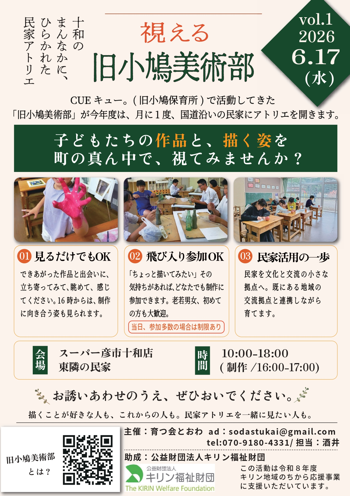